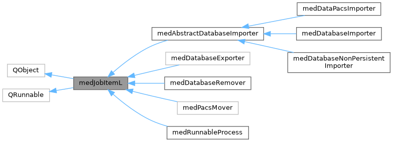
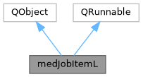

|
MUSICardio 4.2
MUSICardio application created by Inria Epione, IHU LIRYC and Université de Bordeaux
|
Loading...
Searching...
No Matches
|
MUSICardio 4.2
MUSICardio application created by Inria Epione, IHU LIRYC and Université de Bordeaux
|
Abstract base class for all QRunnables that should appear in the Job Toolbox. More...
#include <medJobItemL.h>


Public Slots | |
| virtual void | onCancel (QObject *) |
Signals | |
| void | progress (QObject *sender, int progress) |
| void | progressed (int progress) |
| void | success (QObject *sender) |
| void | failure (QObject *sender) |
| void | cancelled (QObject *sender) |
| void | showError (const QString &message, unsigned int timeout) |
| void | activate (QObject *sender, bool active) |
| void | failure (int error) |
| void | disableCancel (QObject *sender) |
Public Member Functions | |
| virtual void | run () |
Protected Slots | |
| void | onProgress (QObject *sender, int prog) |
Protected Member Functions | |
| virtual void | internalRun ()=0 |
Abstract base class for all QRunnables that should appear in the Job Toolbox.
The base class should use the signals defined here, where sender is the pointer to the object. The pointer is used to track the item in the ProgressionStack, it is necessary due to the non-blocking connection of Signals and Slots between threads. A non-blocking connection is needed for QThreadPool::waitForDone()
An example of use is the following:
|
signal |
This signal is emitted when the process cannot be cancelled anymore.
| QObject | *sender |
|
protectedpure virtual |
Implemented in medDatabaseExporter, and medAbstractDatabaseImporter.
|
virtualslot |
onCancel - Re-implement this, if your job is able to cancel itself (recommended). It should then emit cancelled(sender) to give a status to the ProgressionStack
| QObject *sender |